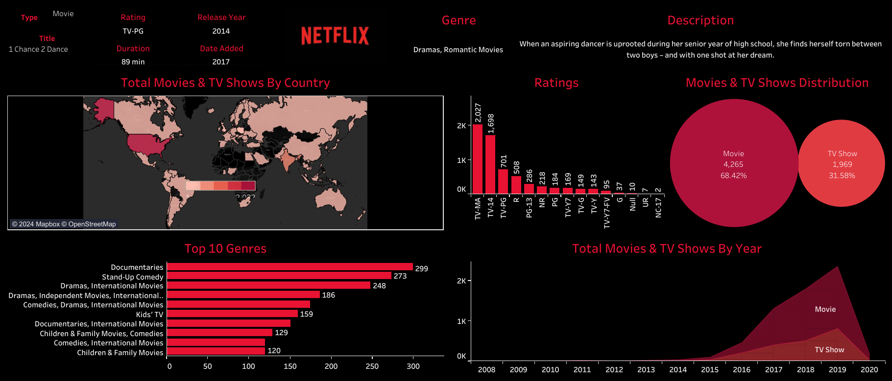

Welcome to my portfolio! I'm dedicated to leveraging data to drive meaningful insights and facilitate informed decision-making. With a passion for data analysis and visualization, I specialize in transforming complex information into clear, actionable strategies. Explore my projects to see how I turn raw data into valuable solutions that make a difference.

In my project, I conducted an in-depth analysis of a bike-share company's data to uncover user behavior patterns and disparities between casual riders and annual members. Through strategic data cleaning and exploration, I provided actionable insights and recommendations to enhance Cyclistic's offerings, attract a broader audience, and drive business growth. This project showcases my proficiency in data analysis, strategic thinking, and delivering impactful recommendations for business success.

In this project, I collected and analyzed data on Netflix movies and TV shows to uncover trends and insights within the streaming platform's content library. Leveraging Tableau's powerful visualization capabilities, I transformed the data into an interactive dashboard, allowing users to explore various facets of Netflix content, including genres, release years, ratings, and more. Through this project, I demonstrated my proficiency in data analysis, visualization, and dashboard creation, providing a comprehensive overview of Netflix's diverse entertainment offerings.